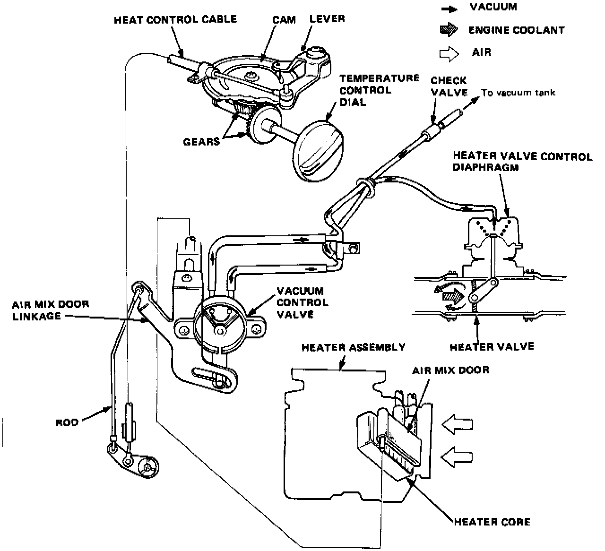

Heater

TEMPERATURE CONTROL SYSTEM
A rotary dial on the control panel regulates both the air mix door and the flow of engine coolant to the heater core. Through a gear reduction and cam/lever mechanism, rotating the dial moves the heat control cable. Through linkage at the heater, the cable moves the air mix door and a vacuum control valve. The control valve, in turn, regulates vacuum to a diaphragm-controlled engine coolant valve. Rotating the dial from "MAX COOL" toward "HOT" sends vacuum to the vacuum control valve and heated engine coolant to the heater core and air through the core, to heat the car.